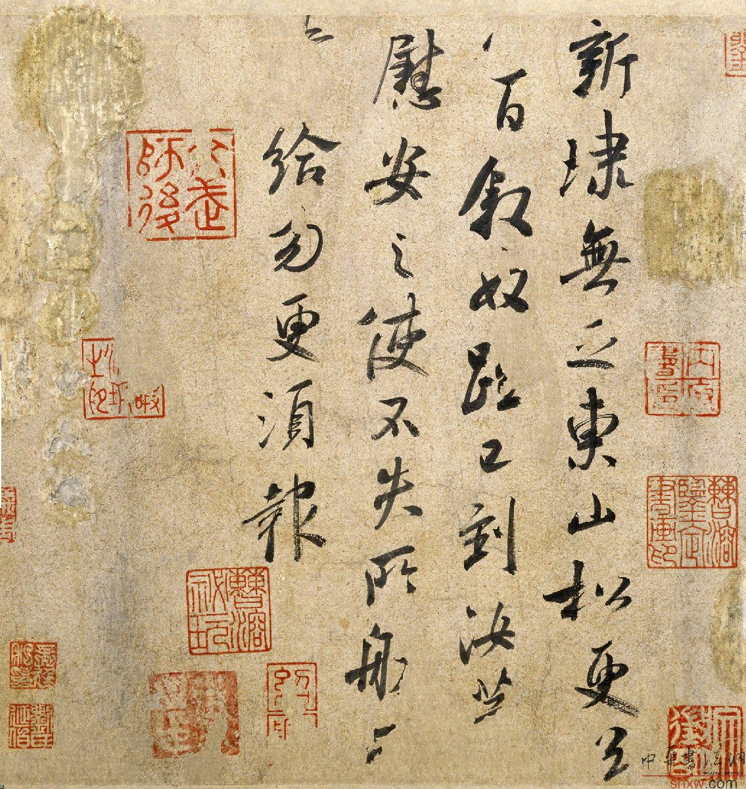
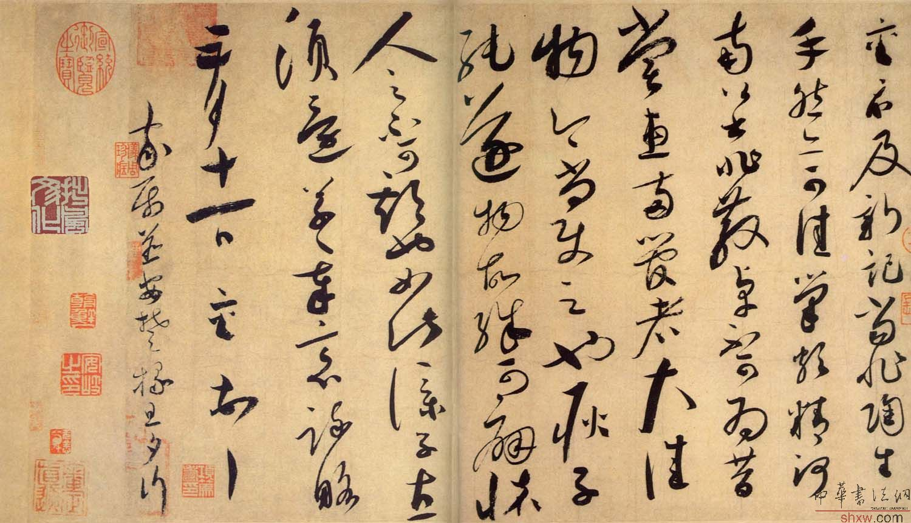

《东山松帖》，晋，王献之书，纸本，行草书，纵22.8cm，横22.3cm。传为米芾摹本。
释文：新埭无乏，东山松更送八百。叙奴□已到，汝等慰安之，使不失所。□□□给，勿更须报。
此帖无款署和题跋。鉴藏印钤南宋“绍兴”连珠印、“内府书印”，明文徵明、刘承禧、吴廷及清曹溶等印。另有两方古印(文不辨)。原有清乾隆内府诸印和乾隆题语，已被刮去。
《东山松帖》是王献之写的一通信札，为断札，有四字磨灭。“埭”(音带)即堵水的堤。“东山松更送八百”应是一句，其意是需再植松八百棵作护堤、美化之用。此帖下笔婆娑，百态横生，萧散秀逸。
宋内府《宣和书谱》、《中兴馆阁录》，明董其昌《容台集》，清孙承泽《庚子消夏记》、安岐《墨缘汇观》著录。刻入明吴廷《馀清斋法帖》、董其昌《戏鸿堂法帖》，清《三希堂法帖》。
蔡京 《唐玄宗脊令颂题跋》 行书


蔡京，字元长，仙游（今福建仙游）人，熙宁进士。徽宗朝，拜尚书左丞、右仆射。大观中，拜太师。二年封鲁国公。是历史有名的权奸。精工书法，尤擅行书，形似米南宫，字势豪健，痛快沉着。或谓“宋四家”苏黄米蔡之蔡，原指蔡京，后人恶其奸邪，易以蔡襄。
《陶生帖》尺牍 1051年 纸本 29.8cm X50.8cm 台北故宫博物院藏
《陶生帖》为草书翰札。潇洒劲逸。结体欹正大小，重轻疏密，随心所至，一气呵成。 黄庭坚说：“君谟真行简札甚秀丽，能入永兴（虞世南）之室”是很正确的。
释文：襄：示及新记，当非陶生手，然亦可佳。笔颇精，河南公书非散卓不可为，昔尝惠两管者，大佳物，今尚使之也。耿子纯遂物故，殊可痛怀，人之不可期也如此。仆子直须还，草草奉意疏略。五月十一日，襄顿首。家属并安。楚掾旦夕行。